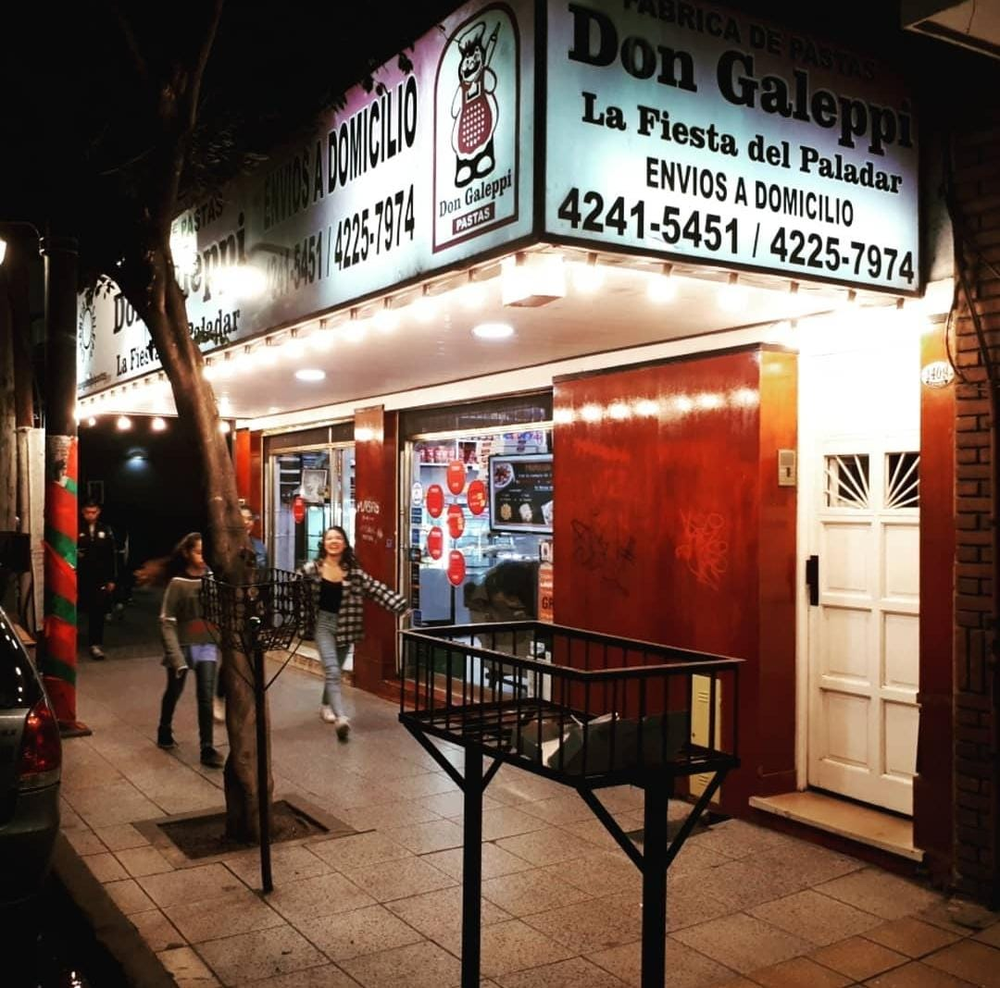

En el año 1990, una mujer y su hijo, el mayor de tres hermanos, habían comenzado a trabajar en la
fábrica de pastas de
unos amigos. Lo que ambos habían comenzado como un hobby, poco a poco fue convirtiéndose en un trabajo
efectivo,
convirtiéndose en la base de un conocimiento que luego valorarán.
Al poco tiempo, el matrimonio de la mujer fue invadido por la idea de emprender una fábrica de pastas
propia. Se puede
decir, que ese fue el inicio de un sueño que lleva ya 27 años de historia.
Como todo sueño, los inicios no son sencillos. Con mucho sacrificio y un préstamo inicial, pudieron
comprarse apenas las
primeras 4 máquinas, quedando fuera algo tan importante como la locación.
Con el horizonte claro y sin bajar los brazos, luego de 5 años y gracias al fruto de un trabajo
anterior, Don Galeppi
pastas finalmente abriría sus puertas en 1995.
El 5 de octubre de 1995, nació Don Galeppi Pastas. Iniciaba un proyecto lleno de ilusión, pero con miedo
y muchas
inseguridades.
Con la fe intacta y amor por lo que hacían, la pareja comenzó a capacitarse,
perfeccionándose con cursos y carreras
gastronómicas que hoy en día aplican.
Los hijos crecían y toda la familia se abocaba al trabajo. Trabajando y estudiando, estudiando y
trabajando, sin la
ayuda de los chicos no hubiese sido posible seguir. Los primeros años fueron difíciles y era impensable
la idea de
contratar muchos empleados. Por lo que la participación de los cinco, de la familia entera fue esencial.
Con el correr del tiempo Don Galeppi ganaba renombre. Ituzaingó 1415, Lanús este, se convertía en el
punto de encuentro
de quienes querían recordar los almuerzos de la abuela.
Pasaron los años y algunos de los chicos quisieron hacer su propio camino. Con sacrificio y pagando un
alto precio, ya
que no es sencillo salir de la comodidad de lo familiar, iniciaron un nuevo camino, probando suerte en
gastronomía y
otras actividades. Adquiriendo nuevas herramientas y conocimiento. Con la distancia, uno valora lo de
uno, por lo que el
regreso a casa se acercaba.
Don Galeppi los esperaba, los esperaba con los brazos abiertos, sabía que volverían y con más
experiencia. El turno de
los hijos había llegado.
Así Don Galeppi pastas creció. Con esfuerzo y dedicación de toda la familia, hoy contamos con más de 20
empleados,
delivery propio, tienda online y aplicaciones. Más de 40 familias viven gracias a Don Galeppi. Y con más
de 30 máquinas
mecánicas, semi automáticas y continuas estamos capacitados para abastecer a varios locales más.
Por lo que Don Galeppi hoy quiere darte las gracias a vos, cliente, amigo y vecino. Por confiar en
nosotros, obsesivos
de la calidad.
¡GRACIAS, GRACIAS, Y GRACIAS!
Don Galeppi pastas